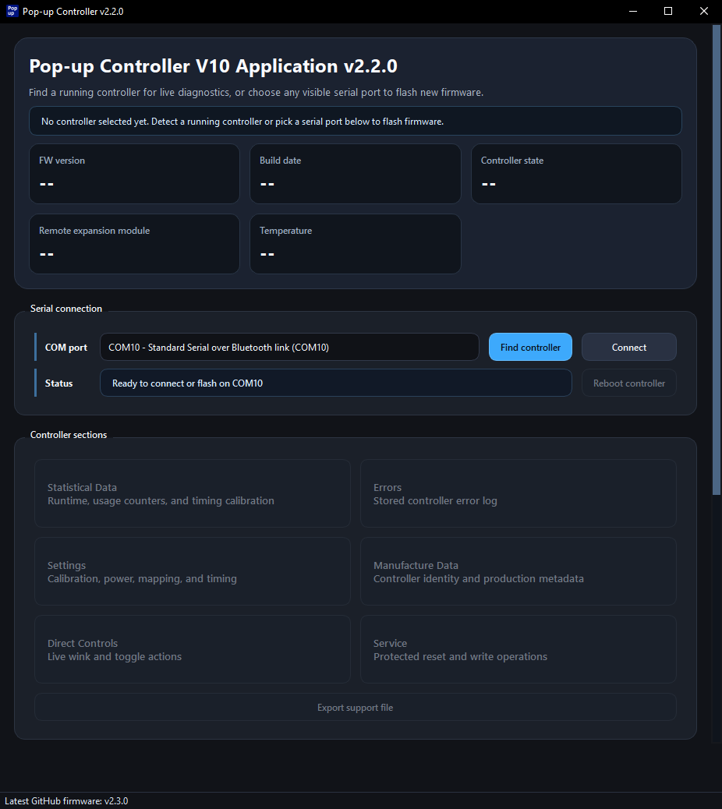

MAIN 20 A
Main power fuse for the entire controller.
Always remove controller power before working on or near pop-ups. You can either: disconnect battery, remove RTR fuse, or disconnect the controller
After installation, avoid driving at night or in poor visibility for at least the first week so you can confirm the controller is working correctly in normal use.


| Position | Icon | Behavior |
|---|---|---|
| HEAD | Pop-ups go UP. | |
| TAIL | No change to pop-up position. | |
| HOLD | No change to pop-up position. | |
| OFF | Pop-ups go DOWN. |
Reaction to OFF position is only 100ms - The pop-ups should go DOWN as soon as you put the light-switch into the OFF position.
Light-switch should be left in the OFF position when car is idle. Otherwise the controller will never enter sleep. See the Power section.
Winking makes a pop-up or both pop-ups go to the opposite state and then back. This can be done either pressing a wink button or by using remote controls.
| Connector | Function |
|---|---|
| X1 | Winks RH pop-up |
| X2 | Winks LH pop-up |
| X3 | Winks Both pop-ups |
| X4 | Toggles both pop-ups* |
Toggling a pop-up makes it go to the opposite position and stay there. For example if your Pop-ups are UP and you toggle them, they will go DOWN and stay there. Exceptions: If the light-switch is in the OFF or HEAD position or when Sleepy eye mode is active, the toggle will behave as a wink instead.

This mode allows pop-ups to reach a position between UP and DOWN.
Use the knob to choose one of the 7 available pop-up positions.
This mode cannot be activated unless the light-switch is in the OFF position

Optional addon for controlling your pop-ups from a distance.
Up to 4 different inputs can be registered.
| Button | Action |
|---|---|
| 1 | Wink RH pop-up |
| 2 | Wink LH pop-up |
| 3 | Wink Both pop-ups |
| 4 | Toggle Sleepy Eye Mode |
This is a separate module that can be added to your controller later.
Remote inputs will work even while the controller sleeps.


Plug and play replacement for the T18 Celica's light retractor relay with support for several accessories.

There are 4 replaceable automotive fuses on board.
Main power fuse for the entire controller.
Protects the non-motor 3.3V and 12V rails.
Fuse for the left pop-up motor.
Fuse for the right pop-up motor.
Do not exceed fuse rating when replacing blown fuses.

Several LEDs on the top of the controller case can help with troubleshooting.
Lights up when the left pop-up motor is being powered.
Lights up when the right pop-up motor is being powered.
Lights up when the controller is running. Off during sleep. Flashing in debug mode.
Turns on when an error occurs. After power on or wake-up from sleep, this LED will flash the amount of errors stored.
Flashes briefly when any input changes state (button press or release).

There are several connectors to connect additional accessories.
| Connector | Function |
|---|---|
| 12-pin Toyota Connector | Connects to the car's wiring harness |
| X1 | Right pop-up wink button |
| X2 | Left pop-up wink button |
| X3 | Both pop-ups wink button |
| X4 | Both pop-ups toggle button |
| X5 | Sleepy Eye Controls |
| X6 | I2C expansion / Remote control module |
| USB-C | Allows connecting controller to PC |

Reset button of the ESP32 module. Reboots the controller without saving data.
Can help during firmware flashing to enter boot mode.
Hold over 5 seconds to save data and reboot.
Located between the Left LED and the potentiometers.
Adjusts the LED brightness of the wink buttons and sleepy eye controls.
Adjusts offset of the RH pop-up in Sleepy Eye Mode.

The controller strain on the battery should be considered, especially when storing the car for extended periods.
Once turned on, the controller maintains this mode until it goes to sleep. In this mode, all the circuits are ready.
Once the light switch is in the OFF position, a timer starts counting down from 15 minutes* and once it reaches 0, the controller enters Sleep mode.
*Earlier firmware versions used 30 seconds
Putting the light switch in any other position resets the timer and disables the countdown. Any pop-up movement also resets the timer.
| Configuration | State | Voltage | Current |
|---|---|---|---|
| Controller | Idle | 12 V | < 35 mA |
| Controller + Remote Addon | Idle | 12 V | < 37 mA |
| Controller | Sleep | 12 V | < 5 mA |
| Controller + Remote Addon | Sleep | 12 V | < 7 mA |
It is possible to reduce power draw further. My prototype ESP32 board reduced power draw to approximately 1.2 mA standalone or 2.6 mA with the remote addon. Contact me for more details.
Estimate how long the battery will take to reach the selected threshold. The controller values use the listed maximum currents as a conservative estimate. Every scenario includes 5% self-discharge per month; Battery disconnected assumes no parasitic current. Replace the example battery and parasitic-current values with your own measurements.
Interactive chart unavailable. Check your connection and reload the page.
Time until battery discharges to 50%
These values are generic estimates. A self-discharge rate of 5% per month is included in every calculation.
There is a custom desktop app that can be used to read or write information to the controller.
